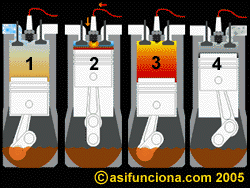
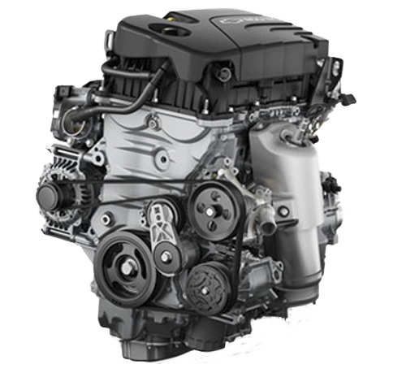

Los motores de gasolina de cuatro tiempos son los más comúnmente utilizados en
los coches o automóviles y para muchas otras funciones en las que se
emplean como motor estacionario.
Una vez que ya conocemos las partes, piezas y dispositivos que conforman un
motor de combustión interna, pasamos a explicar cómo funciona uno típico de gasolina.
Como el funcionamiento es igual para todos los cilindros que contiene el motor, tomaremos
como referencia uno sólo, para ver qué ocurre en su interior en cada uno de los cuatro tiempos:
1.- Admisión
2- Compresión
3.- Explosión
4.- Escape

Primer tiempo
Admisión.- Al inicio de este tiempo el pistón se encuentra en el PMS (Punto Muerto Superior). En este momento la válvula de admisión se encuentra abierta y el pistón, en su carrera o movimiento hacia abajo va creando un vacío dentro de la cámara de combustión a medida que alcanza el PMI (Punto Muerto Inferior), ya sea ayudado por el motor de arranque cuando ponemos en marcha el motor, o debido al propio movimiento que por inercia le proporciona el volante una vez que ya se encuentra funcionando. El vacío que crea el pistón en este tiempo, provoca que la mezcla aire-combustible que envía el carburador al múltiple de admisión penetre en la cámara de combustión del cilindro a través de la válvula de admisión abierta.
Segundo tiempo
Compresión.- Una vez que el pistón alcanza el PMI (Punto Muerto Inferior), el árbol de leva, que gira sincrónicamente con el cigüeñal y que ha mantenido abierta hasta este momento la válvula de admisión para permitir que la mezcla aire-combustible penetre en el cilindro, la cierra. En ese preciso momento el pistón comienza a subir comprimiendo la mezcla de aire y gasolina que se encuentra dentro del cilindro.
Tercer tiempo
Explosión.- Una vez que el cilindro alcanza el PMS (Punto Muerto Superior) y la mezcla aire-combustible ha alcanzado el máximo de compresión, salta una chispa eléctrica en el electrodo de la bujía, que inflama dicha mezcla y hace que explote. La fuerza de la explosión obliga al pistón a bajar bruscamente y ese movimiento rectilíneo se transmite por medio de la biela al cigüeñal, donde se convierte en movimiento giratorio y trabajo útil.
Cuarto tiempo
Escape.- El pistón, que se encuentra ahora de nuevo en el PMI después de ocurrido el tiempo de explosión, comienza a subir. El árbol de leva, que se mantiene girando sincrónicamente con el cigüeñal abre en ese momento la válvula de escape y los gases acumulados dentro del cilindro, producidos por la explosión, son arrastrados por el movimiento hacia arriba del pistón, atraviesan la válvula de escape y salen hacia la atmósfera por un tubo conectado al múltiple de escape.
De esta forma se completan los cuatro tiempos del motor, que continuarán efectuándose ininterrumpidamente en cada uno de los cilindros, hasta tanto se detenga el funcionamiento del motor.
DOHC
DOHC son unas siglas que hacen referencia a double overhead camshaft (doble árbol de levas en cabeza), un tipo de motor en los que el árbol de levas ésta situado en la cabeza del cilindro, pudiendo así mover directamente las válvulas.
Este motor es de combustión interna y usa, tal y como su nombre indica, dos árboles de levas situadas en una culata con las que acciona las válvulas de escape y admisión del motor.
Estos utilizan un árbol de levas para las válvulas de admisión, y otro para las de escape. Por su parte, los motores SOHC usan un solo árbol de levas para hacer funcionar tanto las válvulas de admisión como las de escape.
Ventajas:
En los motores de gasolina, permiten situar la bujía en el centro de la cámara, suprimiendo así el fenómeno de la detonación, conocido más popularmente como “picado”. Esta ventaja también se traslada a los motores diésel, donde les permite generar una mayor efectividad de combustión, sobre todo si nos centramos en la inyección directa.
Al poder manejar las válvulas de admisión y de escape por separado, provoca que haya una mayor fluidez en la cámara de combustión lo que se traduce en mayor potencia.
Desventajas:
Tiene un peso y un volumen mayor que el motor SOHC, por lo que su montaje es más complicado.
Manifiesta una dificultad para el reglaje en la holgura de las válvulas.
